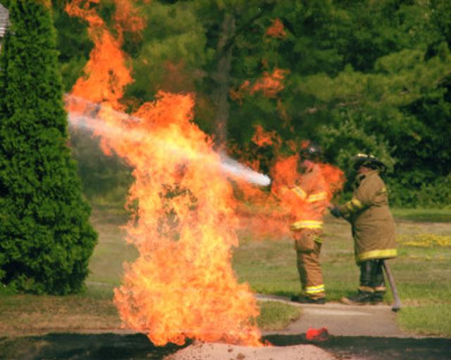
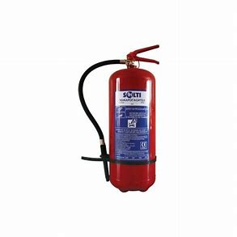

Правила за гасене на пожар
1. Методи за гасене на пожар
За прекратяване на пожар се прилагат няколко основни метода
- чрез разреждане на реагиращите вещества (въздух и горимо вещество) с негорими вещества: вода, пяна, прах и др.;
- чрез изолиране на реагиращите вещества с някакъв материал (кече, пясък, талк, вода, пяна, прах);
- чрез химическо забавяне на реакцията, като в зоната на горенето се подават пожарогасителни средства, които рязко намаляват отделянето на топлина;
- чрез охлаждане под температурата на възпламеняване с вода, пясък, въглероден диоксид и др.

- чрез разреждане на реагиращите вещества (въздух и горимо вещество) с негорими вещества: вода, пяна, прах и др.;
- чрез изолиране на реагиращите вещества с някакъв материал (кече, пясък, талк, вода, пяна, прах);
- чрез химическо забавяне на реакцията, като в зоната на горенето се подават пожарогасителни средства, които рязко намаляват отделянето на топлина;
- чрез охлаждане под температурата на възпламеняване с вода, пясък, въглероден диоксид и др.
2. Средства за гасене на пожари
ВОДА - Най-употребяваното пожарогасително средство е водата. Действа чрез охлаждане на горящите вещества. Не може да се използва при гасене на леснозапалими течности (бензин) и реагиращи с нея вещества, (калциев карбид), съоръжения, които се намират под електрическо напрежение и др.
ВЪЗДУШНО-МЕХАНИЧНАТА ПЯНА се получава чрез смесване на вода с пенообразувател и въздух в специални съоръжения. При гасенето с нея за кратко време се покриват големи горящи площи.
ВЪГЛЕРОДНИЯТ ДИОКСИД е безцветен газ, по-тежък от въздуха, който не гори. Подаден към зоната на горене той разрежда реагиращата среда и я превръща в негорима. Използва се за гасене на електросъоръжения под напрежение и ценни материали, които от другите гасителни средства се повреждат.
АРГОНИТ И АРГОН СА ГАЗОВЕ, които намаляват обемното кислородно съдържание в помещението. По този начин до 1 минута и най-сериозните пожари биват загасени. Надеждни са и не са вредни за околната среда.

ВЪЗДУШНО-МЕХАНИЧНАТА ПЯНА се получава чрез смесване на вода с пенообразувател и въздух в специални съоръжения. При гасенето с нея за кратко време се покриват големи горящи площи.
ВЪГЛЕРОДНИЯТ ДИОКСИД е безцветен газ, по-тежък от въздуха, който не гори. Подаден към зоната на горене той разрежда реагиращата среда и я превръща в негорима. Използва се за гасене на електросъоръжения под напрежение и ценни материали, които от другите гасителни средства се повреждат.
АРГОНИТ И АРГОН СА ГАЗОВЕ, които намаляват обемното кислородно съдържание в помещението. По този начин до 1 минута и най-сериозните пожари биват загасени. Надеждни са и не са вредни за околната среда.